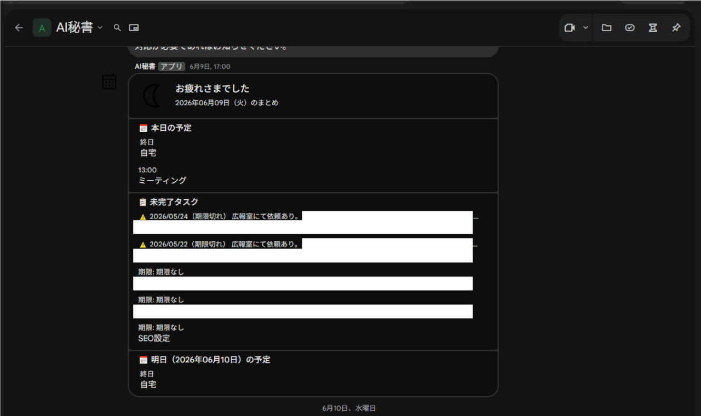

← 実績一覧へ戻る
← 実績一覧へ戻る
AI秘書（Claude版）

課題（Before）
日々の予定確認やリマインドを手動で行っており、確認漏れ・通知忘れが発生していた。予定の登録も手作業のため、二重登録のミスも起きやすかった。
やったこと
- Google Calendar と Google Chat を連携し、Claude を頭脳とした AI 秘書を構築
- 毎朝、当日の予定を Google Chat へ自動通知。予定前のリマインドも自動送信
- Chat への書き込み内容から予定を自動でカレンダーに追加
- 登録時に既存予定との重複チェックを行い、二重登録を防止
成果（After）
予定確認・通知の手作業がゼロに。確認漏れによるトラブルもなくなった。